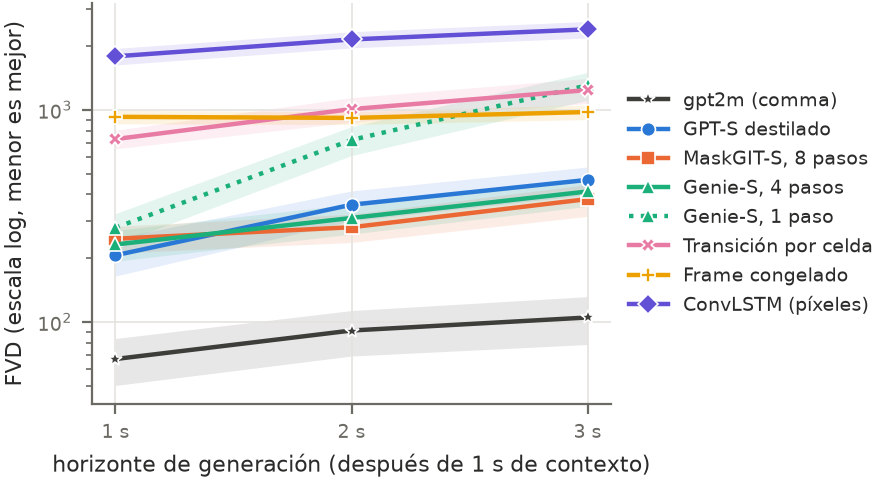
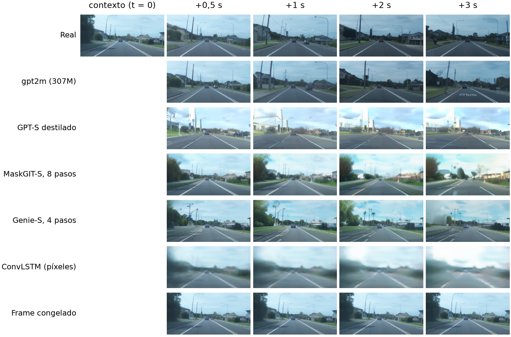

Bautista Peco · Tomás Morales · Kevin Soulier
Un world model predice cómo sigue un video de manejo. Así funciona como simulador para el software de manejo. comma.ai ya entrena así a openpilot.
¿Cuánto se puede achicar y acelerar un world model sin perder calidad?
commaVQ y el benchmark que reproduce a comma.
GPT-S destilado y de cero. ConvLSTM.
Genie de 1 a 25 pasos y MaskGIT-S de 1 a 12.
FVD contra ms por frame, cadena completa.
Cada pasada agrega un token y mira solo los anteriores. Son 128 pasadas en fila: 38 ms por frame.
Arranca con todo enmascarado y en cada paso fija los tokens más confiables, mirando el frame entero: 6,4 ms por frame.
Las que entrenamos usan la receta de su paper y 780.000 frames. gpt2m es el de comma.
Clip 0 de val. Muestras generadas para esta slide con la temperatura de la evaluación. Velocidad: ms por frame del modelo solo (p50), todos en la RTX 3080 Ti. Un modelo de menos de 50 ms va al ritmo de la cámara.
FVD a 3 s, de gpt2m (307M) a los mejores chicos (12–15M). Con 20 a 25 veces menos parámetros, el FVD es de 3,5 a 4,5 veces el de la referencia.
el GPT-S destilado, modelo solo. Con encoder y decoder, 48,2 ms de p50 y 48,4 de p99 a ritmo de cámara: entra, sin margen.
p99 de la cadena completa con Genie-S a 4 pasos (encoder, modelo y decoder) a ritmo de cámara. Ningún frame tarde, en la RTX 3080 Ti.
Genie-S con 1 paso pasa de 279 a 1307 entre 1 y 3 s. Con 4 pasos llega a la calidad de 25 (413 contra 444), que es lo que usa el paper.
El GPT-S gana a 1 s (207) y la decodificación paralela con 8 o más pasos gana a 3 s. Diferencia pareada de MaskGIT-S con 8 pasos contra el GPT-S: +40 a 1 s (p = 0,02) y −81 a 3 s (p = 0,01).
FVD a 1 s: 1790, contra 929 del frame congelado. Con este presupuesto, predecir píxeles da un promedio borroso.
R² de una regresión lineal desde el embedding (la raya: el mismo encoder sin entrenar). El giro no se predice desde ninguno (R² ≈ 0). V-JEPA 2 se preentrena con más de un millón de horas de video.
Con LPIPS, el frame congelado le gana a todos los chicos; solo gpt2m lo mejora. Su FVD a 3 s es 978.
Genie-M (35M) empata con Genie-S (15M) en 1, 2 y 3 s (p ≥ 0,33).
Modelo solo, p50, batch 1, fp16, RTX 3080 Ti; cada paso medido con su commit. MaskGIT-S usa la misma atención: con 4 pasos, de 9,3 a 6,4 ms; Genie tiene la suya, que no tocamos (5,7 ms).
Ahora: tres productos de matrices. Una query contra las 2584 posiciones de la caché. Por qué era lento: en la próxima.
La CPU deja de ser el límite
No bajó: el límite era la GPU
Mismo muestreo, menos lanzamientos
Los números 1 a 4 son los pasos de la slide anterior. Mismos pesos y mismo entrenamiento; gpt2m tiene los mismos cambios. Calidad, FVD pareado después − antes: +12,6 a 1 s (p = 0,18), +27,0 a 2 s (p = 0,05) y +4,4 a 3 s (p = 0,76). El código, en el respaldo 4.
del tiempo de GPU del GPT-S destilado era la atención: 124 de 153 ms por frame. En gpt2m, el 70 %, con 16 bloques.
lectura de la caché de k y v en cada llamada (4,0 MB). La placa da 912 GB/s.
GPT-S destilado por frame, solo por la atención. gpt2m: de 730 a 313.
Un kernel se lanza en bloques, y cada bloque corre entero en un SM, uno de los multiprocesadores de la GPU. Con una sola query, SDPA armaba un bloque por cabeza, que recorría las 2584 posiciones de la caché en 41 vueltas seguidas.
Abajo: una llamada a la atención del GPT-S destilado, por capa y por token, en la misma escala, según el perfil por kernel (torch.profiler, 5 frames con el contexto lleno, con el frame ya en un CUDA graph); baddbmm copia primero el bias a la salida, así que las tres llamadas son 4 kernels. La ubicación de los SM encendidos es ilustrativa. Modelo solo, p50, batch 1, fp16, RTX 3080 Ti.
Medir dónde se iba el tiempo cambió el resultado: con los mismos pesos, el GPT de 12M bajó de 154 a 38 ms por frame. Con encoder y decoder, el p99 es de 48,4 ms de los 50: llega, pero sin margen.
Con la misma red, decodificar en paralelo tarda 6,4 ms por frame con 4 pasos (el modelo solo), y a 3 s no se distingue del GPT-S; con 8 a 12 pasos, es mejor. A 1 s, el GPT-S gana a 8 pasos o más.
Los pasos se eligen en inferencia, sin reentrenar: calidad contra latencia. Con menos de 4, el video se degrada con el horizonte.
CE: cross-entropy por token en val (solo autorregresivos). FVD con IC del 95 % por bootstrap por segmento. Drift: FVD a 3 s sobre FVD a 1 s. ms por frame: p50 del modelo solo, batch 1, fp16 con CUDA graphs (ConvLSTM y transición: fp32 sin graphs), RTX 3080 Ti.
RTX 3080 Ti. Barras: p50 por etapa con la cadena cerrada. A la derecha: p99 y frames que llegan tarde cuando entra un frame cada 50 ms (3000 frames). El encoder y el decoder suman unos 10 ms.
Tiempo de GPU por frame, sumando los kernels (torch.profiler, 5 frames con el contexto lleno, RTX 3080 Ti).
Antes: la atención con caché era un kernel de SDPA (mem-efficient de cutlass: este PyTorch no trae FlashAttention). 768 llamadas por frame, de 161 µs en promedio (160 en el decode; las 6 del prefill son más largas); en el decode, cada una lanza 6 bloques (uno por cabeza; 16 en gpt2m) para 80 SM.
Después: 4 kernels por capa (q·kᵀ con cuBLAS, el softmax, el producto con v y una copia), 15 µs en total. Es la misma cuenta que hace el decode de comma, que fuerza el backend math de SDPA.
Queda una red de unos 13.000 kernels chicos por frame. Bajar de ahí pide fusionarlos (torch.compile, que en Windows necesita Triton) o menos pasos por frame.
y = F.scaled_dot_product_attention(q, k, v, attn_mask=m)un kernel fusionado; con una query, 6 bloquescached_attention: la misma cuenta en tres llamadas4 kernels; el q·kᵀ, en 1008 bloquesself.k_cache.index_copy_(2, input_pos, k) self.v_cache.index_copy_(2, input_pos, v)
s = torch.baddbmm(bias, q, k.transpose(1, 2),
alpha=hd ** -0.5)p = torch.softmax(s, -1)
o = torch.bmm(p, v)
Código simplificado de src/models/backbone.py (cached_attention, Attention.forward). d = dimensión de la cabeza; m (bias en el código): máscara, 0 donde se mira y −∞ donde no, incluidas las posiciones vacías de la caché. Antes, m era booleana y SDPA la convertía en cada capa; ahora es aditiva y se arma una vez (mask_bias, en setup_cache), y baddbmm solo la copia. La cuenta es la misma, pero cambia el redondeo: SDPA calculaba los puntajes y el softmax en fp32 sin escribirlos; ahora los puntajes se guardan en fp16. En cada capa, las 6 cabezas van en un solo producto por lotes. Al entrenar no hay caché: una sola pasada sobre toda la secuencia, por SDPA.
Con el 25 % y el 50 % del presupuesto, la CE baja de 3,96 a 3,30.
Ajuste L(D) = E + B·D−β con E fijo en la CE de gpt2m (2,03): β = 0,60. Predice 2,86 con todo el presupuesto, 2,51 en el óptimo de Chinchilla y 2,23 con 10 veces más datos.
Son dos puntos y E está fijo: la extrapolación es optimista. Falta el punto con el 100 %.
Tokens por parámetro: nuestros modelos, 8; Chinchilla, 20; gpt2m, unos 1.500.
Entre los autorregresivos, el orden por CE casi coincide con el orden por FVD a 1 s: Spearman ρ = 0,90, p = 0,04, n = 5.
400 clips reales contra otros 400 clips reales de los mismos segmentos dan un FVD a 1 s de 103. gpt2m saca 67.
El modelo puede quedar por debajo porque continúa exactamente los clips evaluados; la referencia usa otros tramos de los mismos segmentos.
Con dos mitades disjuntas por segmento, la referencia es 317 y gpt2m, 130.
Por eso leemos el FVD solo para comparar modelos, siempre sobre los mismos clips.
FVD a 3 s en el holdout (200 clips de los 50 segmentos del shard que no se usan para entrenar), según la temperatura de muestreo.
Con la temperatura de su paper (T = 2), Genie-S tiene un FVD de 1739, contra 533 con T = 1: más de tres veces.
Elegidas: GPT-S, 0,9; Genie-S, 1,0; MaskGIT-S, 0,8. MaskGIT-S se evaluó con T = 1, así que sus números son conservadores.
Regla: el menor FVD a 3 s; si dos quedan a menos de 2 %, gana el menor LPIPS.


Se abren en otra pestaña (arquitecturas.html, de Tomás). Flechas para pasar de hoja.